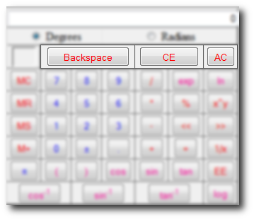

Deletion Buttons
There are several ways to remove variables or entire equations from the display or memory of the Scientific Calculator.

- The next button to the right, "Backspace", deletes a value from the Equation Display from right to left.
- The next button to the right is the CE button or better known as the Clear Equation button.It gets rid of any contents within the Display and sets it back to its default value "0".
- The AC button or All Clear button clears both the memory (by getting rid of the "M" along with the stored data) as well as the Display (sets back to "0")